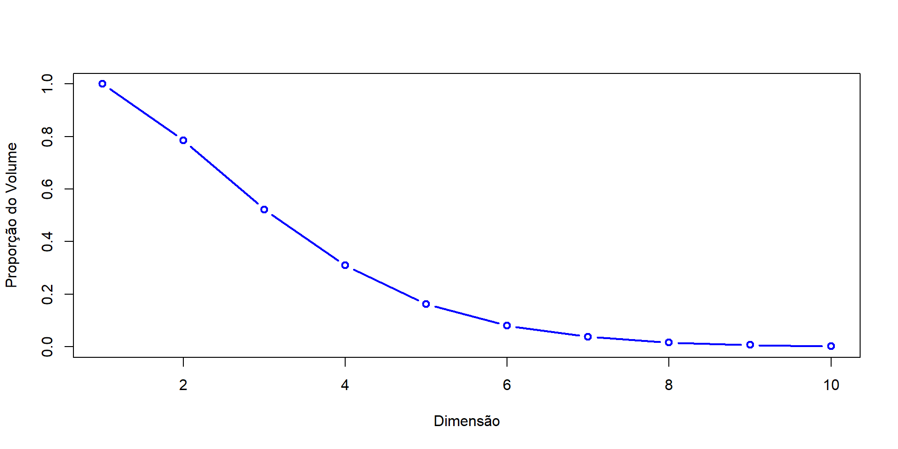
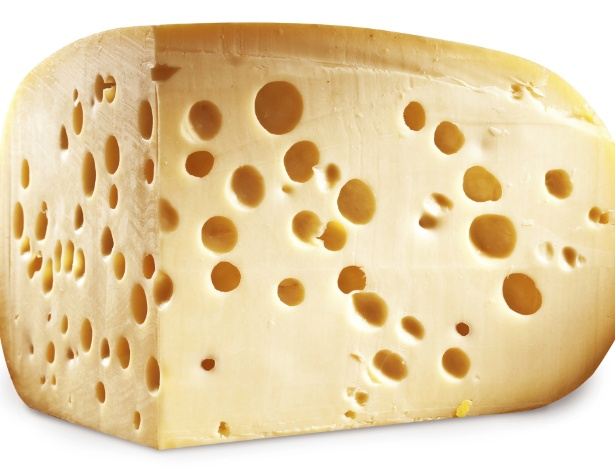

Modelos de equações estruturais
Aula 1 — Revisão multivariada
Estatístico — CONRE 1ª Região Nº 11477
Um pouco sobre mim…
Bacharel em Estatística pela Universidade de Brasília — UnB (2025)
Gerente de projetos ESTAT (2023)
Implementou o Github da ESTAT, template e outras padronizações (2023)
Idealizou, criou e liderou o squad de padronização ESTAT (2023)
Reconhecimentos: Membro inovador (2023), Membro Qualidade e excelência (2023), Membro valoroso - Ousadia (2023)
Estagiário NUADE — STF (2023-2025)
Mais informações no meu site
Contato: brunogtoledo96@gmail.com

Estrutura do curso
Aula 1: Revisão Análise Multivariada
Aula 2: Análise Fatorial Exploratória (EFA)
Aula 3: Análise Fatorial Confirmatória (CFA)
Aula 4: Modelos de Equações Estruturais (SEM) – Teoria
Aula 5: O pacote
lavaan: Implementando um SEMAula 6: O pacote
blavaan: Implementando um SEM BayesianoAcompanhamento e dúvidas até ~05/12
OBSERVAÇÕES:
O material deste curso está disponibilizado para consulta, utilização, cópia, comercialização, etc.
Qualquer alteração no material deste curso, devem ser removidas às informações que me identifiquem.
Teoria estatística clássica da causalidade
Se uma variável X deve ser considerada uma causa de uma variável Y, deve haver associação estatística entre elas (condição da covariância).
Se uma variável X deve ser considerada uma causa de uma variável Y, X deve preceder Y no tempo (condição da precedência temporal).
Se uma variável X deve ser considerada uma causa de uma variável Y, outras possíveis causas de Y devem ser mensuradas e incluídas na análise (condição da eliminação de causas concorrentes).
- fonte: Alexandre, J. Neves, B. Modelo de equações estruturais: Uma introdução aplicada. ENAP, pág 18
Por hora, vamos considerar que as condições 2 e 3 estão atendidas.
Revisão de regressão linear
A regressão é uma forma particular de modelagem de relações causais observadas.
Modelo de regressão linear:
\[y = \beta_0 + \beta_1x_1 + \beta_2x_2 + ...+ \beta_px_p + \epsilon\]
Tal que:
- \(y\) é a variável resposta;
- \(x_j\) são as variáveis explicativas, ou independentes;
- \(\beta_j\) são os coeficientes, ou efeitos parciais;
- \(\epsilon\) é o erro aleatório, com \(\mathbb{E}[\epsilon] = 0\), e \(Var(\epsilon) = \sigma^2\)
Pressupostos:
- Independência dos erros
- Homocedasticidade
- Normalidade (assintótica) dos erros
- Linearidade
Revisão de análise multivariada
(Apenas o que nos interessa para este curso)
Estruturas de dependência
Em modelos univariados, tratamos variáveis isoladamente;
Em modelos multivariados, trabalhamos com variáveis conjuntamente;
A operacionalização destas metodologias dá-se pelas matrizes de covariâncias;
Portanto, diferentemente de modelos univariados, trabalharemos com vetores de média \(\boldsymbol{\mu}\) e matrizes de variância-covariância \(\boldsymbol{\Sigma}\).
Observação
Pode-se dizer que a covariância é a forma não escalonada da correlação.
Vetores aleatórios e matriz de covariância
Definição: \(\Sigma = (\boldsymbol{X}-\boldsymbol{\mu})(\boldsymbol{X}-\boldsymbol{\mu})^T\)
Qual o formato desta matriz?
Quadrada, simétrica e positiva definida.
O que significa ser positiva definida?
\(\boldsymbol{x^T\Sigma x} > 0, \forall x \in \mathbb{R}^N, \boldsymbol{x} \neq 0\)
O que ganhamos com isso?
Elementos da diagonal principal são estritamente positivos (variância!)
A matriz é sempre inversível, e a inversa também é positiva definida
\(det(\boldsymbol{\Sigma})>0.\)
Interpretação geométrica: \(\boldsymbol{\Sigma}\) define o “formato” da nuvem de dados no espaço multidimensional.
Implicação em regressão
Seja \(\boldsymbol{y = X\beta + \epsilon}\), Onde \(\boldsymbol{X}\) é a matriz de preditores e \(\boldsymbol{\epsilon}\) é vetor de erros com variância \(\boldsymbol{\sigma^2I}\).
Então, podemos escrever a relação populacional entre \(\boldsymbol{y}\) e \(\boldsymbol{x}\) como
\[\boldsymbol{\Sigma_{xy}=\Sigma{xx}\beta}\]
onde:
\(\boldsymbol{\Sigma_{xy}}\) é a matriz de covariância entre os preditores;
\(\boldsymbol{\Sigma_{xx}}\) é a matriz de covariância entre o resultado e os preditores;
\(\boldsymbol{\beta = \Sigma^{-1}_{xx}\Sigma_{xy}}\) são os coeficientes populacionais.
O que quero dizer com tudo isso?
Podemos expressar a regressão inteiramente em termos de matrizes de covariâncias!
Maldição da dimensionalidade
À medida que p (número de variáveis) cresce, o espaço de dados torna-se esparso.
Consequentemente, a informação pode se perder!
Correlações espúrias aumentam → surge a necessidade de redução de dimensionalidade.
Observar critérios de quantidade de covariáveis (\(p\)), em relação ao número de observações (\(n\)).

O queijo suíço n-dimensional: Todo o volume está na casca do queijo (não há mais bolhas de ar)
Considere uma hiperesfera inscrita em um hipercubo. A medida que aumentamos a dimensionalidade de ambos, o volume da hiperesfera em relação ao hipercubo tende à zero.
PCA vs Análise fatorial
Em análise de componentes principais (PCA), o objetivo é explicar a variância total, a partir de um conjunto menor de variáveis não correlacionadas — os componentes principais.
Por outro lado, a Análise Fatorial (AF) busca identificar fatores subjacentes, também chamados de variáveis latentes ou construtos, que explicam a correlação observada entre um conjunto de variáveis manifestas (diretamente mensuráveis).
Matematicamente, em AF, estamos buscando mensurar um construto que não pode ser diretamente mensurável
graph TB
F[Felicidade]
V1[Satisfação<br/>com a vida]
V2[Emoções<br/>positivas]
V3[Relacionamentos<br/>satisfatórios]
V4[Realização<br/>pessoal]
V5[Otimismo]
E1[ε₁]
E2[ε₂]
E3[ε₃]
E4[ε₄]
E5[ε₅]
F --> V1
F --> V2
F --> V3
F --> V4
F --> V5
E1 --> V1
E2 --> V2
E3 --> V3
E4 --> V4
E5 --> V5
classDef latent fill:#e1f5fe,stroke:#01579b,stroke-width:2px
classDef observed fill:#f3e5f5,stroke:#4a148c,stroke-width:1px
classDef error fill:#ffebee,stroke:#b71c1c,stroke-width:1px
class F latent
class V1,V2,V3,V4,V5 observed
class E1,E2,E3,E4,E5 error
Implicações para Modelos de equações estruturais
Nos Modelos de Equações Estruturais (SEM), os fatores são representados como variáveis latentes. Desta forma, a Análise Fatorial torna-se um caso particular da modelagem SEM, que incorpora a fundamentação teórica da análise fatorial tradicional, acrescentando o conceito de modelo estrutural — isto é, relações direcionais (presumidamente causais) entre variáveis (observadas ou latentes).
graph TB
MOT[Motivação]
APO[Apoio Social]
DES[Desempenho]
SAT[Satisfação]
PERS[Persistência]
INIT[Iniciativa]
FAM[Apoio Familiar]
AMIG[Apoio Amigos]
NOT[Notas]
PROD[Produtividade]
SATV[Satisfação Vida]
SATT[Satisfação Trabalho]
MOT --> PERS
MOT --> INIT
APO --> FAM
APO --> AMIG
DES --> NOT
DES --> PROD
SAT --> SATV
SAT --> SATT
MOT --> DES
MOT --> SAT
APO --> DES
APO --> SAT
DES --> SAT
classDef latent fill:#e1f5fe,stroke:#01579b,stroke-width:2px
classDef observed fill:#f3e5f5,stroke:#4a148c,stroke-width:1px
class MOT,APO,DES,SAT latent
class PERS,INIT,FAM,AMIG,NOT,PROD,SATV,SATT observed
Por hoje é só!
Dúvidas?
Feedbacks?